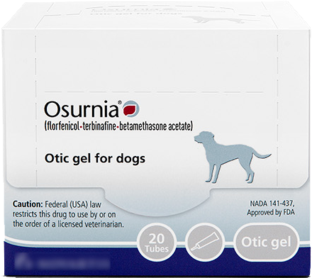

Gel formula for dogs, innovative solution for owners.
OSURNIA® (florfenicol/terbinafine/betamethasone/acetate):
OSURNIA®
(florfenicol/terbinafine/betamethasone/acetate):
signs & symptoms
Ear infections shouldn't be a head scratcher.
Foul smell or discharge from the ears.
Ear scratching and/or head shaking.
Crusted or scabby skin under the ear flap.
Swelling or redness around the ear.
Reluctance to ear touching.
Dog years are too short for recurring ear infections.
The majority of dogs prescribed ear infection treatments have a recurrent history.1 While certain breeds may be more prone to infections2, an underlying condition such as canine allergies could be present. Ear infections will persist if left untreated. Ask your veterinarian about the possibillity of allergies in your dog.
ask your veterinarian
Quit chasing tails.
If your dog has experienced the above symptoms, he or she may have an ear infection. Ask your veterinarian about treating it with OSURNIA® (florfenicol/terbinafine/betamethasone/acetate)
Known Infections
January 5th 2015, February 19th, 2015
◆
Gets about
Less than four infections per year
◆
Signs & Symptoms
Avoids petting, redness and crusted or scabby skin under the ear flap
◆
Gets more infections in
Spring
For veterinarians
Innovative otitis externa treatment with long-lasting efficacy.
Key Benefits:
Key Features:
See our gel formulation at work: